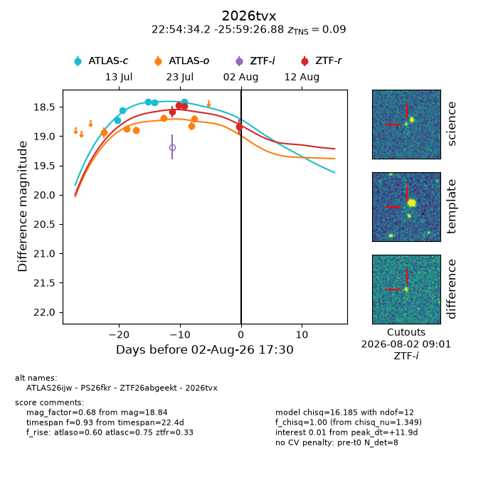
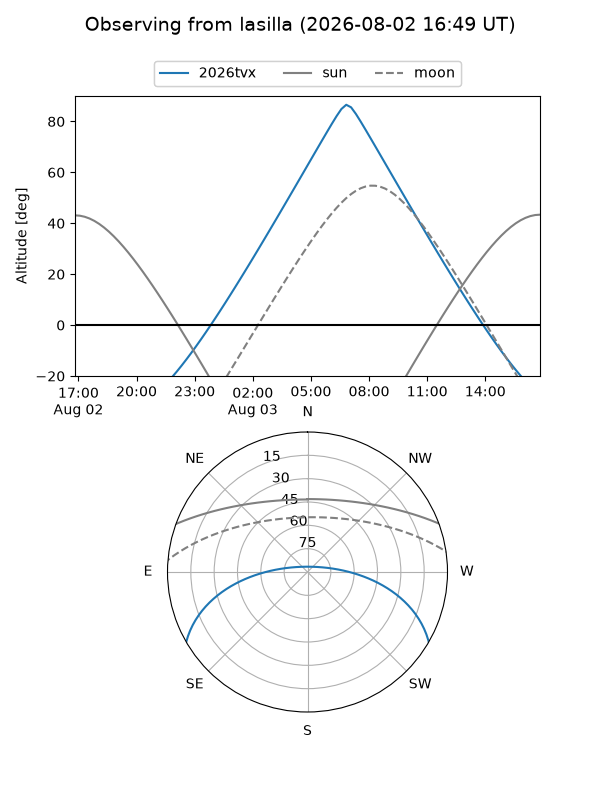
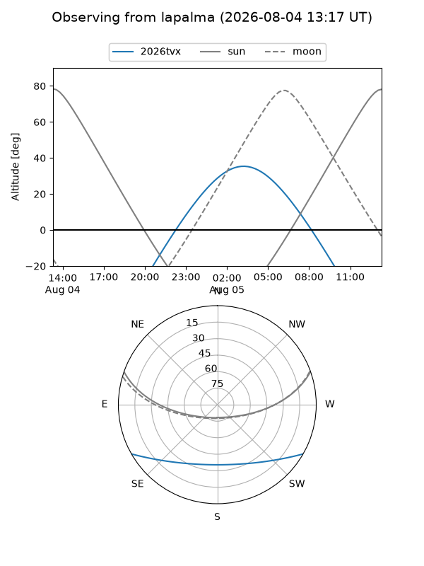
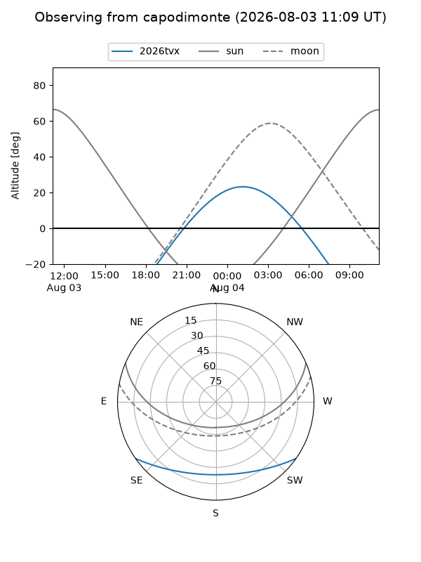
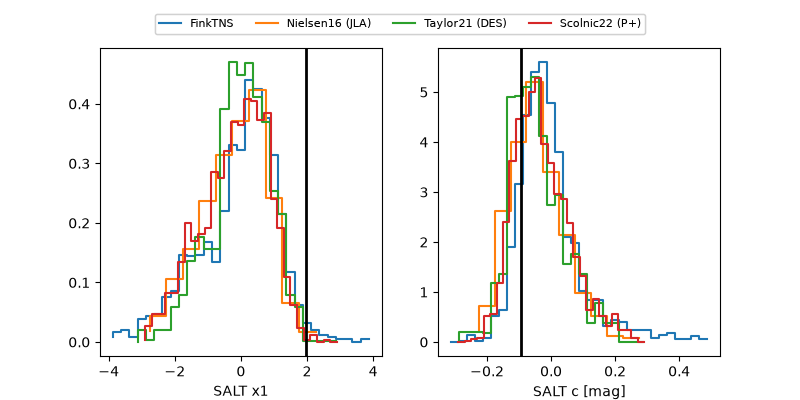

2026tvx
Target 2026tvx at 2026-08-02 17:32
Aliases and brokers:
FINK-ZTF: ztf.fink-portal.org/ZTF26abgeekt
Lasair-ZTF: lasair-ztf.lsst.ac.uk/objects/ZTF26abgeekt
ALeRCE-ZTF: alerce.online/object/ZTF26abgeekt
YSE-PZ: ziggy.ucolick.org/yse/transient_detail/2026tvx
TNS name: wis-tns.org/object/2026tvx
Direct TNS query: direct search
alt names
ZTF26abgeekt (ztf,fink_ztf)
2026tvx (tns,yse)
ATLAS26ijw (atlas)
PS26fkr (panstarrs)
Coordinates:
equatorial (ra, dec) = 343.6427,-25.99080
equatorial (HMS+DMS) = 22:54:34.24,-25:59:26.88
galactic (l, b) = (28.7224,-63.90017)
Flags:
TNS type: SN Ia
TNS redshift: 0.0900
peak dt: +11.9
Photometry:
last atlasc=18.41, atlaso=18.70, ztfr=18.84
5 atlasc, 6 atlaso, 4 ztfr detections
Lightcurve

Visibility



Additional plots
